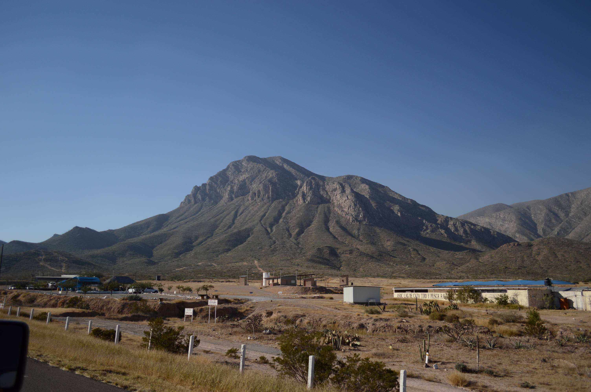
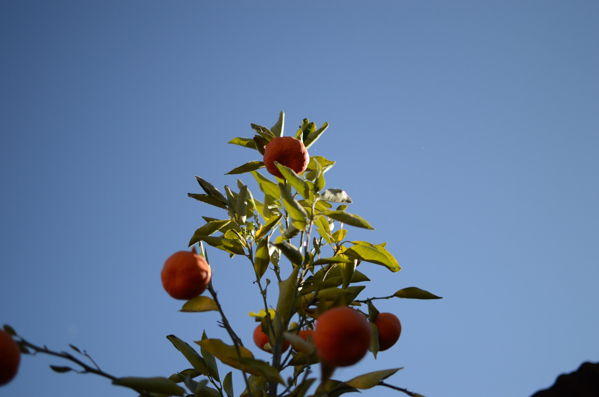
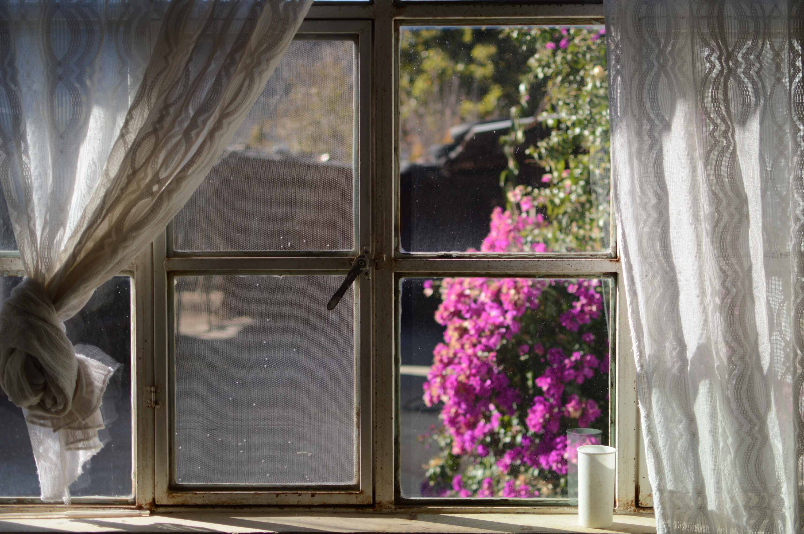
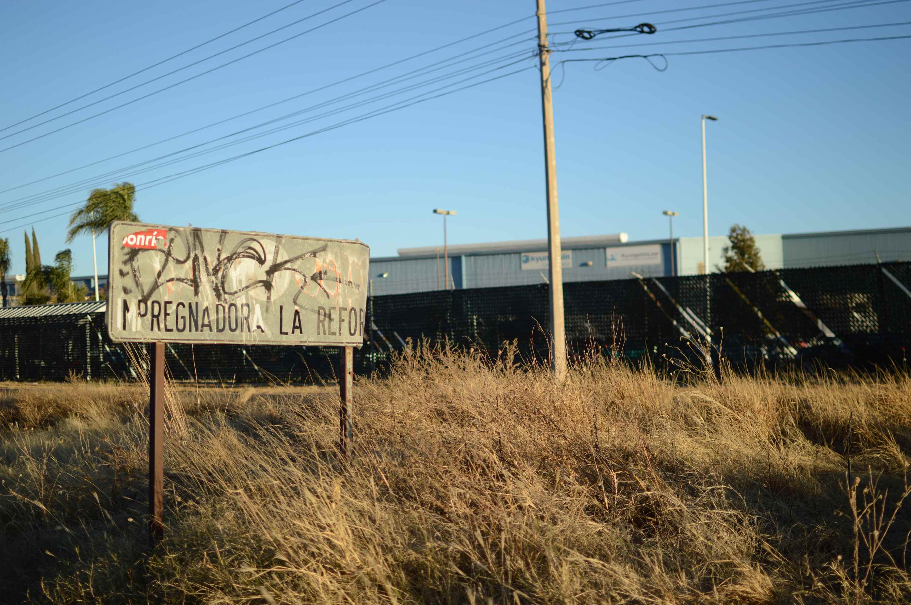
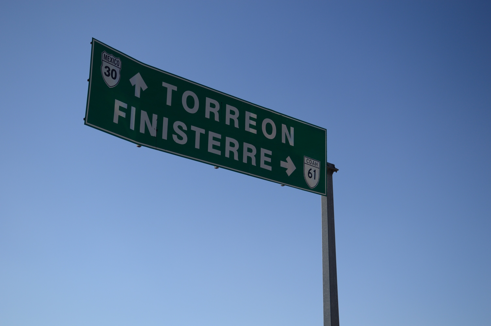
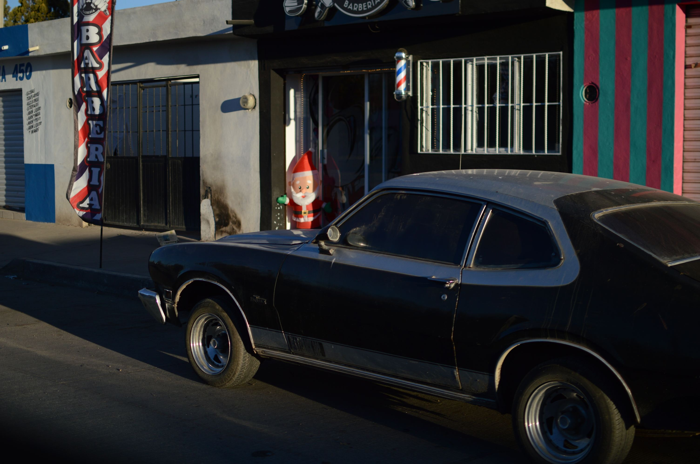

Oranges
I never really thought about it until relatively recently, but it is kind of surprising how well citrus grows at my grandpa's house. There's multiple orange, lime, and lemon trees with branches that end up sagging under the weight of all their fruit. Kind of took it for granted, condsidering the surrounding terrain looks like this:
Very dusty.
To be fair, there's wet and dry seasons. During the wet season the dust gets displaced by a vegitative green, with the transformation spurred by intermittent torrential downpours. The stormy days are some of my favorite, mostly because it's a great excuse to do nothing. Just hang out in someone's kitchen drinking coffee. It can be a little hard to have actual conversations though, since the sound of rain smacking sheet metal roofs tends to drown everything else out.
It's gorgeous though. Streets turn into little rivers, carving out the unpaved alleys and sending their material downstream until reaching the paved roads near the busier parts of town. The paved roads in turn kinda of start looking like those unpaved alleys, with all the sand, pebbles, and rocks covering up the neat cement sections.
Anyway, those rains must replentish some sort of aquifer (or maybe the citrus trees are goated and bulk up on water), because you end up with fruits like these:
And flowers like these:
And little views like this:
All available within the internal courtyards of everyone's house.
Really wish it was better down there.
Clothes
Yeah honestly no idea with this one.
Just a random pile of clohes I found while riding bikes around campus at like 3 or 4 am.
Small Towns
Driving through Illinois (off the interstate) you get to drive through tons of little towns. Lots of these little towns are pretty dilapidated, with most storefronts looking like the one in the image above. This is the thing everyone's been talking about for the past, like, 40 or 50 years. Death, decline, despair.
A few small towns here and there look like they're doing fine, from a driver's seat point-of-view. I think these are just the ones that are near hubs, like small cities or large towns, whose residents don't face push or pull factors to the same degree as the more isolated towns further from any economic center.
And really, that's all it is. Well, "all it is" does tons of legwork here. Of course it's easy to say it's just economic push and pull factors, because anything can be a push or pull. But I guess I mean that "push and pull" is a good framework to start analyzing the deterioration of small town America. Instead of placing blame on some abstract process or entity - globalization! NAFTA! China! - one should look at specific reasons individuals may be encouraged to leave a place and go somewhere else. Hu Jintao didn't just snap his fingers and force the American ruling class to shut down World Class Sporting Goods in Smallville, Illinois.
To be fair, basically no one is saying this exactly, but the sentiment that can be extracted from all the noise around this issue kind of approximates this. Maybe insted of the Chinese Premier, it's a free trade agreement, or some international organization, or some politician.
Anyway, I might be biased, but these places remind me of somehwere else.
Pueblitos
It's really interesting how this exact same problem is seen across many small towns in Mexico, but I haven't seen many comparisons between the two geographies. The follwing is mostly based on anectodal experience (maybe I'll find some numbers and add those in).
My dad's village in Mexico is still fairly vibrant, but it's definitely changing. There's many small children running around during the summer, and plenty of older adults to keep an eye on them. Small corner stores remain open, serving fresh tortillas every morning. Farmers work the ejidos, ensuring the new grain depot is busy. A new clinic was just built with funding from the federal government. During the summer months and around Christmas the dance halls blast music well into the morning hours. Almost everyone now has those shiny stainless steel solar water heaters.
However, many young adults (including most of those in my family) have left. Some say it'll only be temporary. Others are more realistic with themselves and leave for good, with plans to (maybe, potentially) come back during retirement. Where are they going? The United States. What are they doing? Working.
They are earning wages and enjoying a material quality of life that easily surpasses what the vast mojority of them could have attained by staying in Mexico. They are leaving an environment that many consider dangerous, spurred by factors outside of any one individual's control. Many barriers - some physical, some legal, some cultural, some interpersonal - lie between these young adults and the relative splendor of the USA. But on average, that does little to dissuade the young.
The choice to leave, spurred mainly by economic considerations, has many downstream political, economic, and demographic effects.
Politically, well, we're kinda in the middle of it I guess. This one's a lot, and honestly I'm not gonna think about it right now lmao.
Economically, there's a few key things. First, the individuals that seek out lives up north enjoy materially better lives. New(ish) phones, clothes, vehicles, better medical care, a safer environment, and just much, much higher wages in general compared to what could have been obtained by staying.
Second, they provide much needed abor to the largest and most advanced global economy. Again, I should go back and include some solid data here, but the main idea is that these new workers integrate into the US economy by performing lower-skilled labor. This, in turn, effectively allows the existing population (usually with better education and training) to up-skill and perform more productive labor.
Third, they inject money into the local economy back home in Mexico. Basically everyone sends some money back to the family that remains in Mexico. This is a huge boost to families and local economies, since the USD has such enormous purchasing power. A small fraction of a US worker's pay goes a long way in small-town Mexico. Effectively, this itself boosts outcomes in Mexico, as people can afford better / more goods and services.
Bascially, just a more efficient allocation of labor that benefits everyone. Also my theory that this is the reason behind the success of the American and Chinese economies. Both places have a large pool of relatively poor rural communities (for the US nowadays, thats Mexico). Both places have wealthy, highly advanced metropoli with highly skilled and educated workforces. And both places have high economic migration from the poorer rural regions to the wealthy regions where lower-skilled labor is needed. This is the engine of prosperity.
Finally, this economic migration has distinct demographic effects. Primarily, the gradual depopulation of the rural towns where the migrants originate from, shifting that growth to the urban centers the migrants move to. I mean, it's kind of obvious, as this has been happening since the dawn of civilization. Well, at least the growth of urban centers. I don't know if rural regions have depoopulated as drastically as we're seeing now. I should check.
Anyway, this also means that the children of said migrants will grow up and live in the United States, instead of some rural village. Effectively, shifting population growth from rural towns to the wealthier, urban regions.
The(ir) kids yearn for the mines
A few things. I think it's interesting how much bandwidth is afforded to depopulating rural towns in the USA, and how many treat it as some enigma, when basically the same thing is happening south of the border, which everyone is suddenly expert on.
I think the "solution" to the rural depopulation "problem" is basically the same for both regions. The specifics might differ, but it's just a matter of making these rural regions better places to live. Have them offer more economic pull factors that do enough to keep people in. Or alternatively, increase barriers that make it much harder to migrate. The problem with the latter is that realistically, it doesn't work. This can be seen through the (now legal?) internal migration in China in spite of the Hukou system, or the large migration from Mexico to the US in spite of our migration restrictions. Even if one could raise barriers enough to stop this process, I don't think it would be good for anyone. Economic migration isn't some zero-sum process. Quite the opposite, really.
Okay, so make these rural regions better places to live. How? Well, that's the million dollar question. There have been some directed efforts by the Biden administration to encourage high-tech factories (like battery plants, semi-conductor fabs) to open up shop in rural regions across the USA. It was also thought that by focusing investment in more red / rural regions, it would make it harder for republican administrations to remove the subsidies supporting these high-tech jobs if their consitutents depended on them (lmao). Some even suggest that with the advent of remote work, small towns could become attractive places for young adults due to the drastically lower cost of living. And even if American young adults still don't find these rural regions appealing, millions of immigrants would.
But the problem is that many of these small rural towns, even when offered such opportunities, are actively hostile towards them! Because batteries and solar panels and remote work and migration and any change at all is gay, I guess. Even when you have millions of people dreaming to join and contribute to the USA, whether in Los Angeles, California or Springfield, Ohio.
Small towns in Mexico don't have the luxury of complaining about industrial investment. Well, people are people, so some probably still do. But it's mainly bebcause there might not be the same interest or capacity to invest in these rural regions. Or it might not even be seen as a problem. People like my parents recognize that there is very little opportunity in these rural regions. That's the entire reason why they migrated, and why people like me are here.
People love talking about bringing back factories, bringing back steel mills, bringing back whatever it is that made small-town America great. But always as some abstract place, where someone else should live and and someone else should work. The(ir) kids yearn for the mines!
Maybe that office job in the city ain't so bad.

{kind=link}
{kind=link}